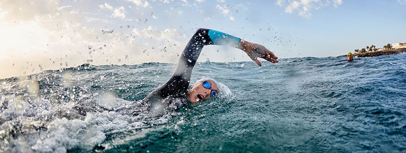
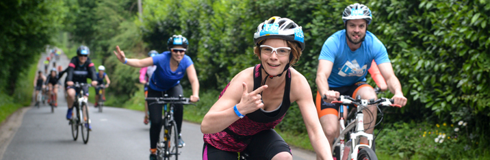
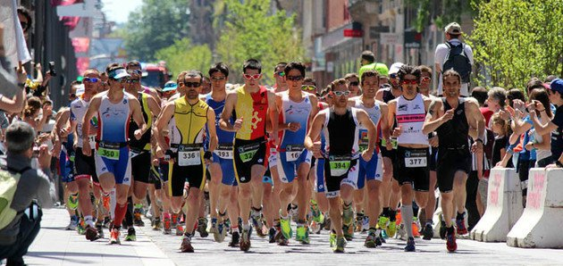

Le triathlon est une discipline sportive composée de trois sports d'endurance (natation, cyclisme et course à pied) dont les distances varient en fonction des compétitions. Le triathlon est une discipline sportive qui prend de l'ampleur, attirant les nageurs, les cyclistes et les coureurs avides de nouveaux challenges mais aussi de vrais débutants. Certaines courses sont composées à 50 % de néophytes ! L'association des 3 disciplines différentes que sont la nage en eaux libres, le cyclisme et la course à pied rend cette pratique sportive très complète. Les transitions entre sports se font rapidement et sont une des particularités de ce sport proposant des efforts allant de 1 à 15h00.
Première discipline : La natation
La section natation est la plus courte avec des distances allant de 400 mètres à 4 kilomètres. Les compétiteurs se retrouvent sur une ligne de départ avec une combinaison dans la plupart des cas. L'épreuve de natation se déroule en mer, en lac ou même en rivière, pas de lignes d'eau comme en piscine : On nage en peloton ! L'objectif du triathlète est d'aller le plus vite possible sans dépenser trop d'énergie ; chose peu évidente car comme le fait remarquer la physiologiste Véronique BILLAT, la nage nécessite une dépense énergétique 4 fois plus coûteuse que la course à pied.
2- Deuxième discipline : Le vélo
A la sortie de l'eau, on enlève son costume de nageur pour revêtir sa tenue de super-héros à 2 roues. Un des éléments attrayants du triathlon est la variété des profils de course qui permet aux grimpeurs comme aux rouleurs de s'exprimer. Chacun y trouvera son plaisir mais dans le respect des règles anti-drafting : on ne roule pas en peloton mais en contre-la-montre individuel lors des triathlons. Seuls les Jeux Olympiques et autres Coupe du Monde permettent la course en groupe ! La gestion de l'allure est le point crucial pour permettre un enchaînement vers la course à pied efficace. Gestion d'allure allant de pair avec une stratégie alimentaire personnalisée car la durée de cette portion peut atteindre 8h00 d'effort (barrière horaire habituel sur une course Ironman). La transition vers la dernière épreuve de course à pied, doit se faire dans les plus brefs délais, car chaque seconde perdue pourrait éloigner le sportif de la victoire. Il doit alors poser son vélo, enlever son casque, et mettre ses chaussures de running le plus rapidement possible afin de s'attaquer à la dernière et ultime étape du triathlon.
3- Troisième discipline : La course à pied
On a tendance à dire que la compétition commence à partir de la seconde transition. Notre organisme doit gérer le passage d'un fonctionnement musculaire sans chocs (sur le vélo) à un mode de locomotion heurté à chaque foulée, une chaleur marquée et une alimentation plus limitée. Le passage du vélo au running n'est donc pas à prendre à la légère d'autant que l'ensemble de l'anatomie est modifiée par le passage sur la selle : Le redressement du buste à T2 (La 2nde transition du vélo vers la course à pied) va générer une raideur musculaire et un emballement de la fréquence cardiaque. Selon l'âge et le format de course choisi, on parcourra des distances allant de 3 kilomètres sur Super-sprint jusqu'à 42 kilomètres pour les Ironmen.
4- Distance
Le triathlon doit son accessibilité à la variété des distances et durées de course.
| TRIATHLON | Natation | Cyclisme | Course à pied |
|---|---|---|---|
| Distance XS | 400 m | 10 km | 2.5 km |
| Distance S | 750 m | 20 km | 5 km |
| Distance M | 1.5 km | 40 km | 10 km |
| Distance L | 3 km | 80 km | 30 km |
| Distance XL | 4 km | 120 km | 30 km |
| Distance XXL | 3.8 km | 180 km | 42.195 km |